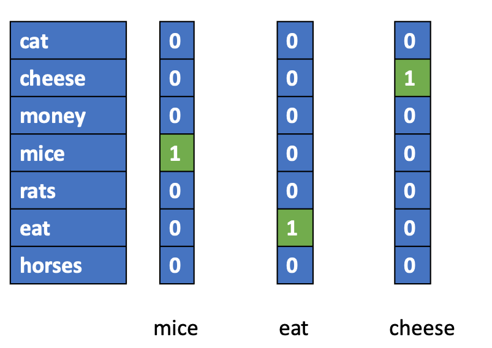
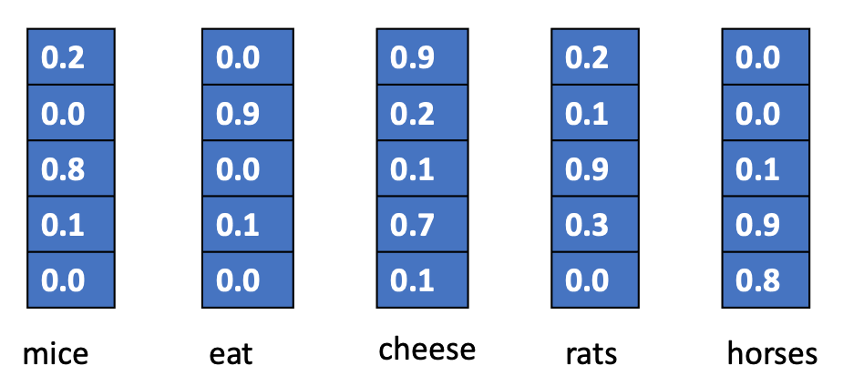
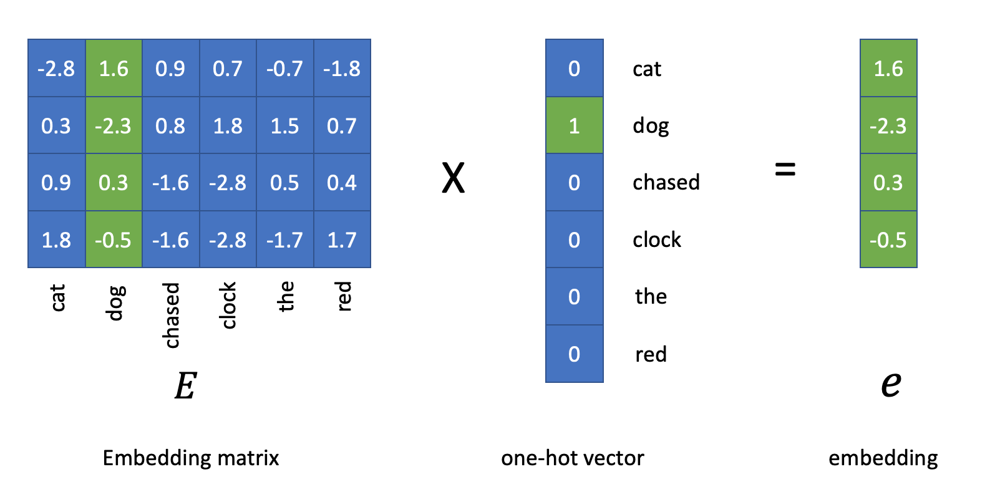
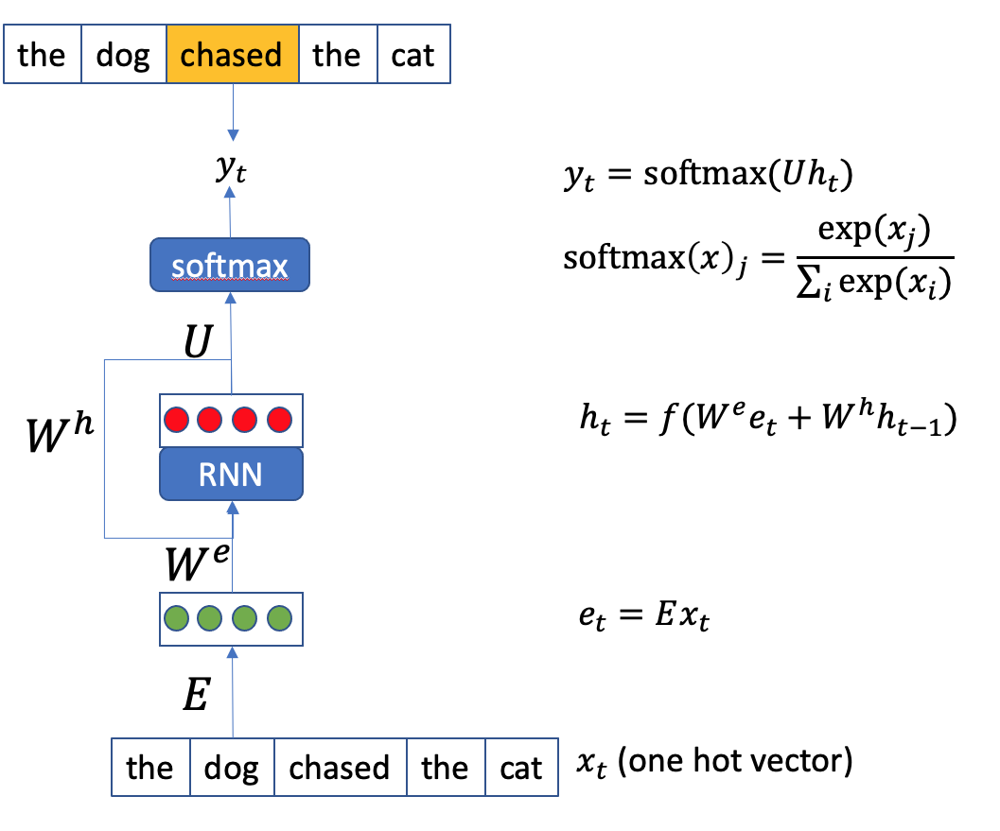
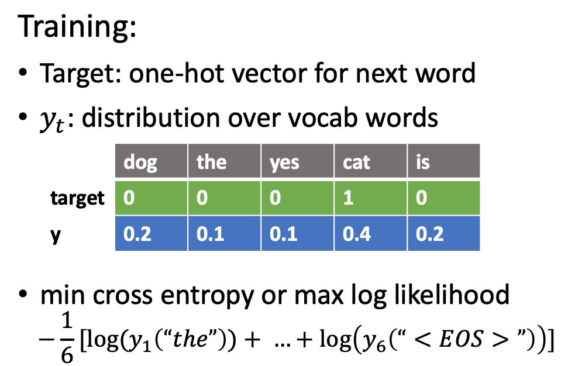
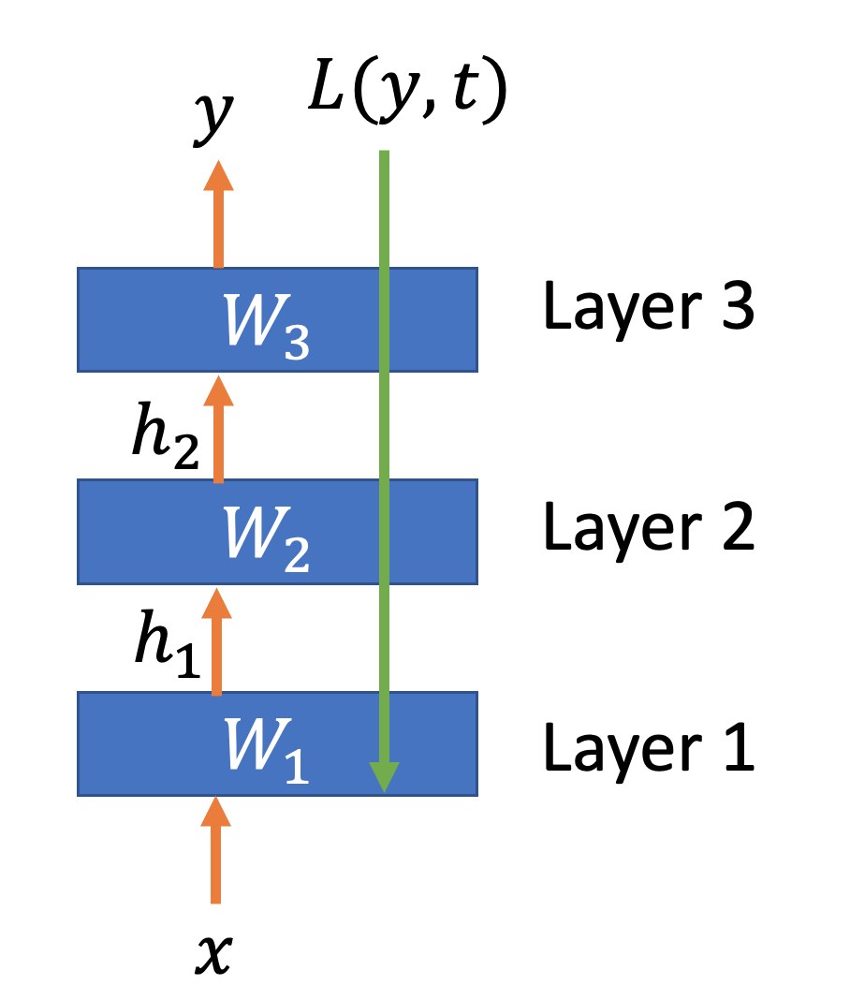

Sequence Models Intuition¶
In deep learning NLP, sequence models are often the most widely adopted methods.
In this tutorial, we will go over the intuitions of sequence models.
Neural Network¶
Neural network expects an numeric input, i.e., a numeric representation of the input text.
So the first step in deep learning is the same as traditional ML, which is text representation.
And because a sequence model eats in one word as the input, word representation is the key.
Word Representations in Deep Learning¶
Like in traditional machine learning, feature engineering is crucial to the success of the computational modeling.
Of particular importance is the transformation of each text into numeric representation that has a significant portion of textual semantics.
One-hot encoding is the most intuitive way to represent lexical words numerically.
If the language vocabulary size is V, each word can be represented as a vector of size V, with its correpsonding dimension to be the value of 1 and the rest being 0’s.

The main problem with is one-hot encoding is that the semantic distances in-between words are all the same, i.e., D(mice,rats)=D(mice, horses)= 0.
Word Embeddings¶
Now via neural network, we can learn word embeddings automatically. (See Word Embeddings notes).
These word embeddings allows us to perform computation of lexical semantics.

import sklearn
from sklearn.metrics.pairwise import cosine_similarity
import numpy as np
mice = np.array([0.2,0.0, 0.8, 0.1, 0.0])
rats = np.array([0.2,0.1,0.9, 0.3,0.0])
horses = np.array([0.0,0.0,0.1,0.9,0.8])
cosine_similarity([mice, rats, horses])
array([[1. , 0.97575491, 0.16937447],
[0.97575491, 1. , 0.30567806],
[0.16937447, 0.30567806, 1. ]])
Each dimension may not have specific semantic fields.
From One-hot to Embeddings¶

Recurrent Neural Network (RNN) Language Model¶
Now that each word is represented by embeddings, we can represent words as ebmeddings, and build a RNN language model.

The RNN Langage model takes the word at each time step as the input and output the predicted next word.
And the output at time step i becomes the input of the RNN at time step i+1.

The loss function of the RNN Language Model is the distance between the predicted word, y, and the correct next-word (in its one-hot form).
The training of the RNN language model is thus to minimize the sum of the cross-entroy at all time steps.

For example, if the target next work is cat, it’s one-hot representation is
[0, 0, 0, 1 ,0], and the RNN LM predicted y is[0.2, 0.1, 0.1, 0.4, 0.2], we can compute the cross-entropy at this time step as follows.
k: refers to the dimensions of the one-hot vectors
t: refers to the target next word
y: refers to the predicted y from the RNN LM
def cross_entropy(y, t):
delta = 1e-7
return -np.sum(t * np.log(y + delta))
t = [0.0, 0.0, 0.0, 1.0, 0.0]
y = [0.2, 0.1, 0.1, 0.4, 0.2]
cross_entropy(np.array(y), np.array(t))
0.9162904818741863
And we compute the average cross-entropy errors across all time steps.
N: the number of words in the input text
Back Propogation¶
With the defined loss function, we can learn how good our current model is in the training process (i.e., the distance between the true target and the predicted label).
In deep learning, we can use back propogation to find out:
how each parameter of the RNN LM is connected to the loss function
or, which parameter of the RNN LM contribute to the change of the loss function more
And therefore, we can adjust the parameters of the RNN LM accordingly.
The algorthm often used is called gradient descent

References¶
These lecture notes are based on a talk presented by Ananth Sankar: Sequence to Sequence Learning with Encoder-Decoder Neural Network Models. Graphs used here are taken from Dr. Sankar’s slides.